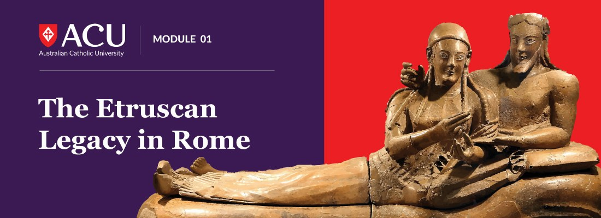

Module 1 Sample

Summary:
In this sample of Module 1, we’ll explore how the Etruscans shaped the foundations of Rome and continue to mark the city today.
In this sample of Module 1, you’ll explore
- sources that can reveal the lives of the Etruscans
- how Etruscan religious and social practices shaped the story of Rome
- how ancient Rome interacted with Etruscan culture in building the classical city
- where we can see Etruscan influences and legacies in modern Rome